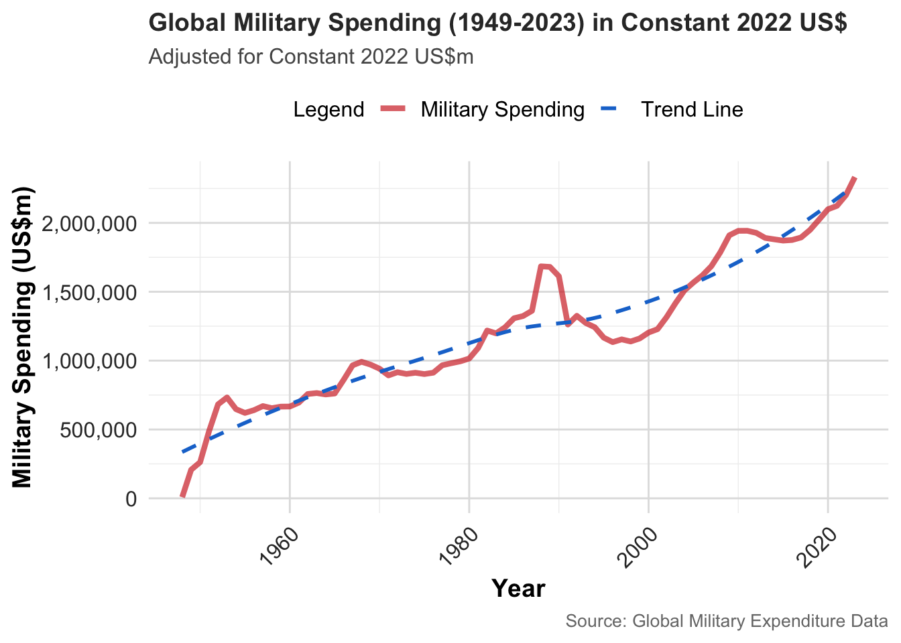
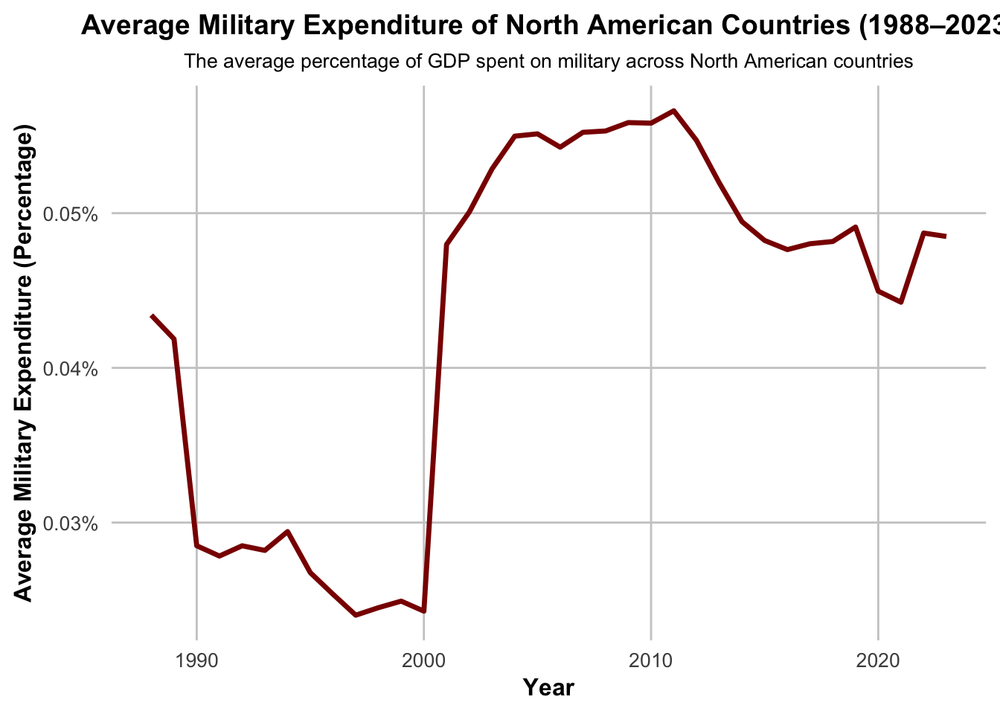
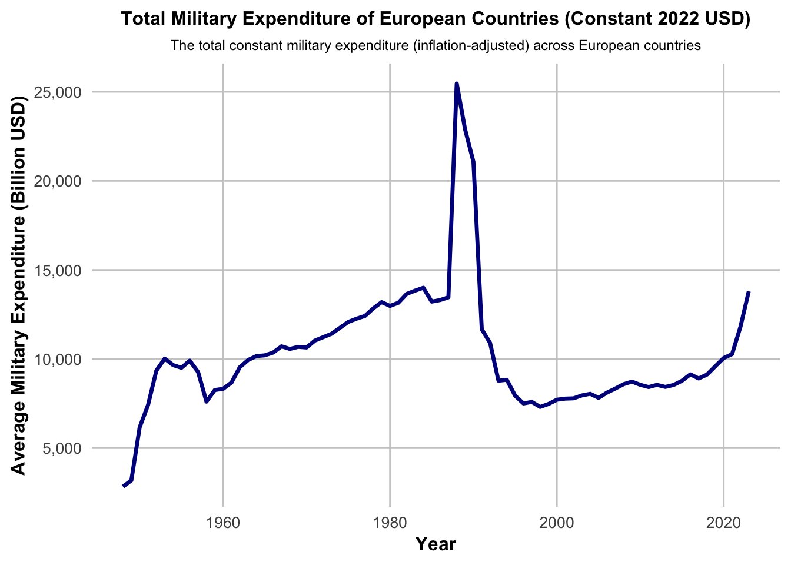
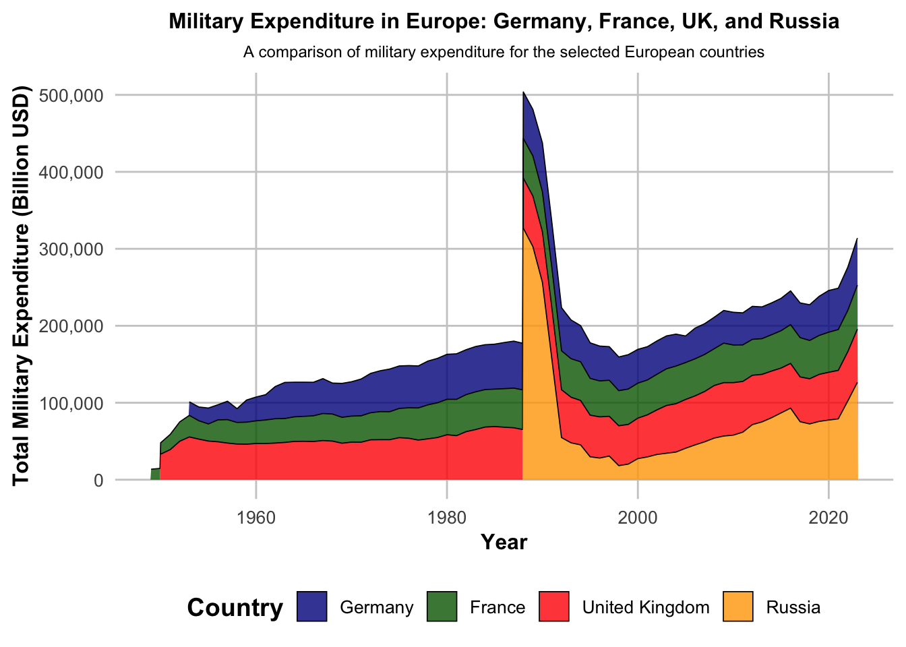
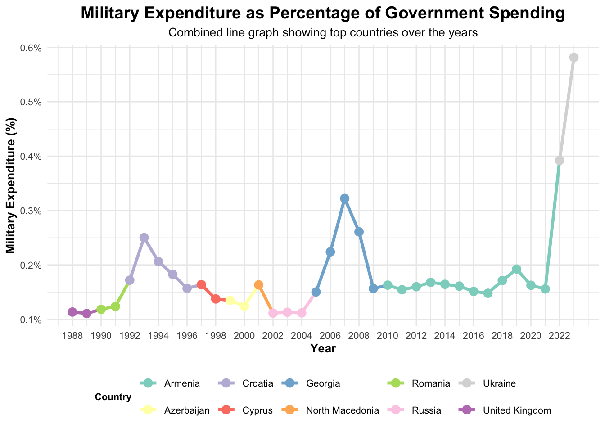
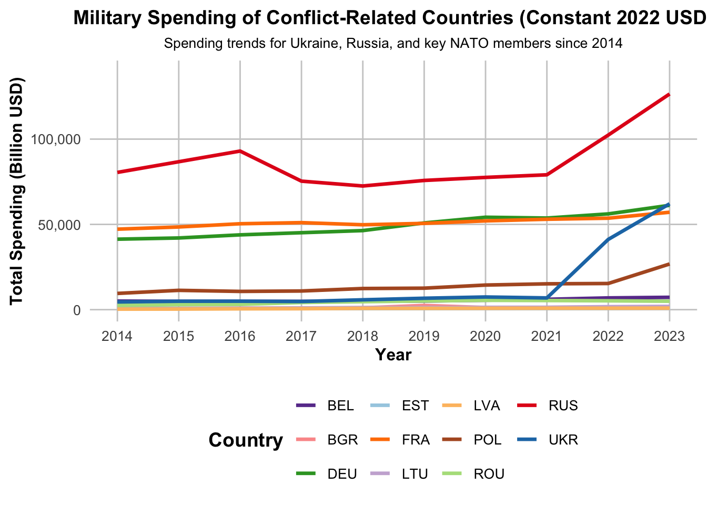
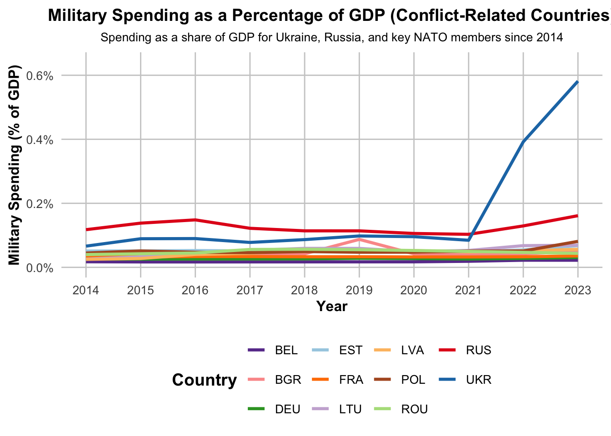
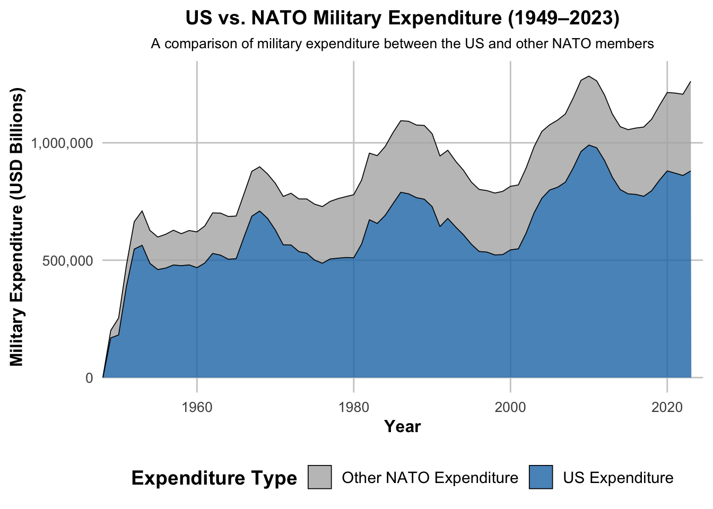

Military Expenditure Trends
How has global military spending changed in response to major geopolitical events?
- Historical trends in military expenditure.
- Impact of major geopolitical events (e.g., Cold War, post-9/11, Ukraine conflict).
- Importance of understanding global military spending.
Global Military Spending Trends (1949-2023)
- Increase: Military spending rises from 1949 to 2023 (adjusted for 2022 USD).
- Post-Cold War Dip: Decline after Cold War, due to lower tensions.
- Mid-2000s Surge: Notable rise from terrorism & instability.
Closer Look to North America

Military Spending in North America (1988-2023)
- Post-Cold War Decline: Reduced spending in the 1990s due to lower global tensions.
- Post-9/11 Surge: Significant rise in military spending after 2000.
- Recent Stabilization: Spending levels have stabilized in recent years, likely due to economic and geopolitical factors.
Closer Look to Europe

European Military Expenditure (1949-2023)
- Cold War Surge: Significant increase in military spending during the 1950s, driven by Cold War tensions with the Soviet Union.
- Post-Cold War Decline: After the Soviet Union’s dissolution in 1991, European military spending dropped due to reduced perceived threats.
- 1991 Spike: The peak in 1991 is due to Russia’s military spending being included in European totals after the Soviet Union dissolved, before it was excluded.
Reason for 1991 Spike and Russian inclusion to dataset

Geopolitical events in Europe from 1988

Geopolitical Events and Military Spending in Europe
Dissolution of the Soviet Union (1991): Triggered conflicts, increasing defense budgets like Armenia, Azerbaijan, Georgia, and Ukraine.
Nagorno-Karabakh War: Ongoing conflict between Armenia and Azerbaijan, with escalations in the early 1990s and 2020, influencing military spending in both countries.
Bosnian War (1992-1995) & Kosovo War (1998-1999): These conflicts impacted military spending in the Balkans, particularly in Croatia and Serbia.
Geopolitical Events and Military Spending Impact
- 2008 Russo-Georgian War: Georgia increased its military spending to modernize its armed forces and enhance its defense capabilities following the war.
- Russian Invasion of Ukraine (2022): The invasion prompted Ukraine and neighboring countries to boost military spending in response to Russian aggression.
- NATO Expansion (1990s-2000s): Countries like Poland, Romania, and the Baltic states saw increased military spending to meet NATO standards as the alliance expanded eastward.
Total Military Expenditure of Asian Countries

Key Observations
- Steady Increase: Asia’s military spending has risen steadily since 1950, surging post-1990s.
- Geopolitical Shifts: The rise of China as a global power, the end of the Cold War, and regional conflicts, such as those in the South China Sea, have significantly influenced military expenditure.
- Economic Growth: Economic growth in countries like China and India has provided the financial resources to support increased defense budgets.
- Evolving Threat Perceptions: Rising Concerns over terrorism, cyber threats, and instability drive spending.
Average Military Expenditure of Asian Countries as a Percentage of Government Spending

Key Observations
- Downward Trend: Military expenditure as a percentage of government spending generally decreased from the early 1990s to around 2010 despite increasing total spending likely due to rapid economic growth.
- Early 1990s Increase: A sharp increase in military spending in the early 1990s likely reflects shifting dynamics in the Asia-Pacific region.
- Recent Uptick: There has been a slight rise in military spending as a percentage of government expenditure, possibly driven by evolving security concerns.
Current Global Outlook for 2023
Geopolitical Events and Military Spending Impact
The Impact of Geopolitical Events
Ukrainian Conflict

Key Observations
- Russia’s Sharp Increase: Post-2021, Russia escalated military expenditures amid ongoing conflict.
- Ukraine’s Defense Spending Surge: Since 2014, Ukraine has significantly raised defense budgets to counter Russian aggression.
- NATO Members’ Military Budget Increase: Poland, Romania, and Baltic states increased military spending due to security concerns.
- Geopolitical and Economic Factors: Geopolitical tensions, NATO readiness, and domestic factors shape Europe’s military budgets.
Key Trends

Key Trends
- Ukraine’s Military Spending Surge: Ukraine’s defense spending has sharply risen from 2022 to counter Russian aggression.
- Russia’s Steady Military Focus: Russia maintains consistent military spending to ensure readiness amid tensions.
- NATO Members’ Increased Spending: NATO members, particularly those near Russia, have raised defense spending since 2021 in response to escalating security threats.
- Slow Growth in Western Europe: Western European countries, including France, Germany, and the UK, show slow growth in military spending at relatively lower levels.
Geopolitical Events and Military Spending Impact

Main Insights and Key Observations
- US Dominance in NATO Defense Spending: The US contributes around 70% of NATO’s total defense spending, underscoring its major role in the alliance.
- NATO Allies Below 2% Spending Target: Many NATO allies, especially in Europe, fail to meet the 2% GDP defense spending guideline.
- Highlighted During Crimea Crisis: The 2014 Crimea crisis emphasized the need for greater European military investment, with the US urging NATO allies to increase defense spending.
Discussion and Interpretation of Findings
US Dominance in NATO Defense Spending: The US has most of NATO’s defense spending, shows the financial imbalance in the alliance, particularly in times of geopolitical tension.
Asia-Pacific and Middle East Military Spending: China’s military rise and India’s defense investments, with oil-driven spending in the Middle East boost regional military budgets.
European Dependence on US Military Support: Many European NATO members, have relied on US military support, but the 2022 Russian invasion led to reevaluations and initiatives like PESCO to strengthen defense.
Conclusion
- Global Military Spending Trends:
Military spending has risen since 1949, peaking during major conflicts. - Regional Differences:
The US dominates NATO, while Europe relies heavily on US support; Asia-Pacific and the Middle East also see growing defense budgets. - Implications:
These trends guide for policy makers and security strategies and highlight the need for further research.